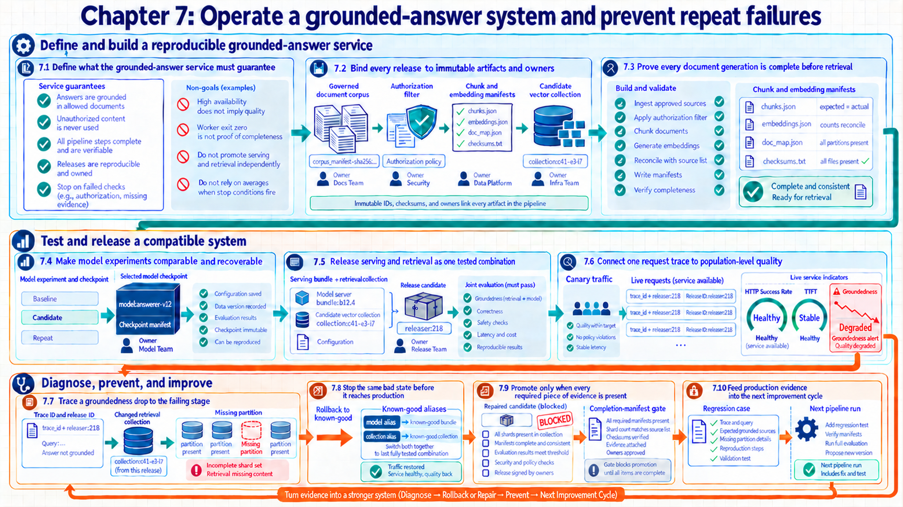

7 Operating a grounded-answer system end to end
How do all six layers cooperate when a production answer becomes less grounded even though the service remains available? The preceding chapters produced versioned artifacts, recoverable distributed jobs, serving bundles, evidence, durable and derived storage, and retryable pipelines. Those results form one system whose release records connect an alert to a verified recovery.
The chapter map follows one grounded-answer release from immutable inputs and measured rollout evidence through incident diagnosis, prevention, and the next controlled change.
Chapter map: operating a grounded-answer system end to end
Sections 7.1 to 7.3 define the service requirements, immutable identities, and document-to-retrieval path. Sections 7.4 to 7.6 connect reproducible experiments, coordinated release records, request traces, and population measurements. Sections 7.7 to 7.10 use a constructed groundedness incident to show diagnosis, recovery, prevention, and the next improvement cycle.

7.1 Defining the end-to-end service target
Every technical layer is now available. An end-to-end design still needs a product definition that prevents teams from optimizing local metrics while breaking trust, privacy, or reproducibility. The workload, evidence responsibilities, and system requirements define how the components fit together.
The case is a multi-tenant grounded-answer service. Users ask questions about a governed document corpus. The system retrieves authorized passages, generates an answer, attaches citations, and records enough evidence to evaluate and replay the request without storing unnecessary sensitive content.

The retriever selects and authorizes evidence, the generator constructs an answer from that context, the evaluator checks claims and citations, and the release identity records the exact combination. These records localize a failure without labeling every wrong answer as a model-weight defect.
| Requirement | Meaning | Evidence |
|---|---|---|
| Authorization precedes use | A user may retrieve and cite only documents permitted at query time. | Tenant/ACL filter version and retrieved source IDs |
| Claims are grounded | Material factual claims are supported by supplied, cited context. | Claim-level judge output and citation verifier |
| Every release is reproducible | Weights, tokenizer, engine, prompt, retriever, corpus, and evaluator are immutable identities. | Serving-bundle and collection manifests |
| Derived state is rebuildable | Embeddings and indexes can be recreated from durable source versions. | Chunk, embedding, and index build manifests |
| Promotion is reversible | Candidate aliases can return to the last known-good bundle and collection. | Rollback drill and retained versions |
| Telemetry is governed | Tracing preserves diagnostic identifiers while applying retention and redaction policy. | Sampling/redaction configuration and audit |
Each system requirement has a producing component, a machine-verifiable record, and a stop action. The retrieval pipeline produces access-aware source identities. The trace records the selected evidence. The release gate blocks a candidate whose negative-access tests fail. A requirement without a stop action cannot control a release.
Release evidence window: enough observation for a promotion decision
A candidate needs enough observation to expose warm-up effects, workload changes, delayed labels, and rollback behavior:
- Baseline: Compare a candidate with the last known-good release on the same request mix and protected quality slices.
- Window: Collect enough shadow or canary traffic to include peak and off-peak behavior, cache warm-up, retries, delayed evaluator labels, and one planned rollback rehearsal.
- Measures: Track availability, TTFT and ITL, retrieval recall and freshness, groundedness, authorization failures, cost, and evaluator disagreement with release identity attached.
- Decision: Promote only when every required slice and guardrail has data for the full window, otherwise extend observation, repair the candidate, or keep the known-good release.
- Conclusion: A defined measurement window prevents a short favorable sample from being mistaken for sufficient release evidence.
7.2 Coordinating artifact versions and release responsibilities
The product requirements are explicit. Incidents become untraceable when ‘the model,’ ‘the data,’ or ‘the index’ refers to a mutable alias instead of a specific generation. An identity graph records edges when components build or consume artifacts.
| Artifact | Example immutable identity | Owning layer | Required references |
|---|---|---|---|
| Source corpus | corpus_manifest=sha256:... |
Data governance/storage | Source object versions and ACL snapshot |
| Chunk set | chunker:v4/corpus:41 |
Retrieval pipeline | Corpus, code, parameters |
| Embedding set | embed:e3/chunks:41 |
Retrieval pipeline | Chunks, model revision, normalization |
| ANN collection | collection:c41-e3-i7 |
Vector platform | Embedding set and index config |
| Training run | experiment:ft-2026-071 |
Training/experiment tracking | Dataset, base model, code, config, image |
| Model checkpoint | model:answerer-v12 |
Model registry | Training run and checkpoint manifest |
| Serving bundle | bundle:b12.4 |
Inference platform | Model, tokenizer, engine, quantization, prompt defaults |
| Evaluation report | eval:grounded-v9/b12.4/c41 |
Evaluation platform | Suite, judge, bundle, collection |
| Deployment | release:r218 |
Control plane | Bundle, immutable collection ID, report, approval |
| Request trace | trace_id + release:r218 |
Observability | Runtime spans, retrieved IDs, output digest |
Artifact governance: immutable resolution of routing aliases
Separating mutable routing aliases from immutable artifacts preserves experiment reproducibility:
- Human-friendly aliases such as
production,current-corpus, orlatest-modelare mutable routing pointers, so they are unsuitable as experiment inputs. - Every run or request resolves and records its immutable target at entry.
For one failed request, the trace resolves the deployment, the deployment resolves the bundle, collection, and approved evaluation, those artifacts resolve their build runs and immutable inputs. In the release direction, a candidate receives a deployment ID only after every required upstream identity is present.
Release governance: ownership and emergency escalation
Defining approval roles and escalation authorities prevents unvetted production changes:
- The producing teams own the completeness and evidence of their artifacts, the release owner assembles the compatibility record, the operations owner controls rollout, rollback, and the evidence window.
- Approval records the candidate, evidence links, accountable person, and expiry or review point. Escalation identifies who can stop traffic when a hard guardrail fails, it is not replaced by a favorable average score.
7.3 Tracing documents from ingestion to retrieval
The identity graph defines the required connections. The first active path turns governed documents into searchable state without losing source, access, deletion, or version information. Committed generations and quality checks make the ingestion path reproducible.
The document ingestion path progresses through eight verifiable state changes:
- The source snapshot locks document versions and access metadata in an immutable corpus manifest.
- Validation checks MIME types, character encodings, duplicate rates, policy compliance, and total item counts.
- Chunking applies a versioned splitting algorithm and preserves source byte offsets, content hashes, reading order, and access policies.
- Embedding converts each chunk into a vector using a locked model revision and normalization rule.
- The index build writes approximate-nearest-neighbor structures to an isolated staging collection while live traffic continues to use the current release.
- Reconciliation compares vector counts, unique IDs, deletions, and partition coverage with the corpus manifest.
- Evaluation runs held-out retrieval cases under load and checks recall, latency, and filter compliance.
- The coordinator publishes a committed-generation manifest. Only then can a release record refer to the collection for shadow or canary traffic.
The following checks define completion for the candidate generation instead of relying on process exit status.
| Gate | Pass criterion | Why exit code is insufficient |
|---|---|---|
| Completeness | Expected source/chunk/vector counts reconcile by tenant and partition | A worker can skip a partition and still exit successfully |
| Integrity | Hashes, dimensions, metadata schema, and unique IDs match the schema definition | Serialization may succeed with wrong shape or duplicates |
| Authorization | ACL mutation and negative-access tests pass | Readable vectors can still expose forbidden content |
| Retrieval quality | Required recall and citation coverage pass on held-out slices | An index can be healthy but semantically poor |
| Freshness | Insert/update/delete become searchable within objective | Static benchmark ignores lifecycle lag |
| Recovery | Candidate restores or rebuilds within RTO | Replication status does not prove usable recovery |
The completion manifest is the commit record. Expensive workers may retry and write attempt-scoped shards, but only the coordinator can convert those outputs into a consumable generation after reconciliation. The promotion task reads that committed evidence instead of inferring completeness from worker status alone.
7.4 Reproducible model experiments
The retrieval collection can now be reproduced. The generator or evaluator may still require supervised adaptation, and a long distributed run is designed to survive interruption without losing experiment identity. One run manifest connects distributed strategy, scheduling, checkpointing, and experiment evidence.
Model-state and activation memory determine whether DDP, FSDP, tensor, pipeline, sequence/context, or expert parallelism fits the constraint. The communication-heavy dimension uses a fabric whose measured bandwidth and topology support its traffic, and the scheduler admits the complete topology. Each rank records world, node, local-rank, device, and shard identity.
| Stage | Required identity/evidence | Failure point |
|---|---|---|
| Allocation | Code commit, image digest, data manifest, base model, config, topology | Rendezvous and gang allocation |
| Active training | Loss, throughput, MFU, memory, power, communication, data time | Rank failure, straggler, NaN, device error |
| Checkpoint | All model/optimizer/RNG/sharding state and completion manifest | Partial save or lost node-local state |
| Resume | Checkpoint generation plus compatible code/config/topology rules | Silent restart from wrong step or sampler position |
| Held-out evaluation | Held-out suite, raw outputs, evaluator identity, quality/cost slices | Metric-only success without failed cases |
| Register | Validated immutable model version and lineage | Mutable path or incomplete bundle |
The experiment tracker compares candidate runs, while the orchestrator records task execution and retry history. The checkpoint manifest links both. Model registration occurs in a separate gate after held-out evaluation.
Reproducibility audit: identifying drift between twin execution runs
Comparing execution manifests reveals configuration drift and non-deterministic environmental factors:
- Same baseline: Both runs use the same dataset snapshot, evaluation suite, tokenizer, and serving test mix.
- Changed factors: Run B changes the sharding strategy and image digest, the manifest records those differences explicitly.
- Comparison: Run B improves throughput but increases recovery time and shows a quality drop on the long-context slice.
- Decision: The candidate is not promoted until the long-context regression is explained or repaired, the aggregate throughput gain alone is insufficient.
- Conclusion: Comparability comes from holding the declared inputs constant and making every changed factor visible.
7.5 Releasing serving and retrieval changes together
Model and collection artifacts are independently versioned. A grounded-answer response depends on their compatibility with the prompt, citation formatter, tokenizer, and evaluator, so promoting only one alias can create an untested combination. The deployable unit is a compatibility matrix released under canary evidence.
- Release candidate: One immutable serving bundle, retrieval collection, prompt/policy configuration, and evaluation report proposed for production traffic.
A coordinated cutover needs one request-resolution rule. Suppose the production pointer names release r217, whose immutable manifest contains bundle b12.4, collection c40-e3-i7, prompt p9, policy acl6, and evaluator report eval217. The release service validates candidate manifest r218 as one complete set. It then conditionally changes the production pointer from expected value r217 to r218. If another change has already moved the pointer, this update fails and the release owner rechecks the candidate.
Each new request resolves the production pointer once at admission and carries the resulting release ID plus all immutable component IDs through retrieval and generation. A request admitted under r217 keeps that set until completion. A request admitted after the pointer update uses the complete r218 set. This avoids a mixed pair only when the gateway resolves one release manifest or passes its immutable IDs to every component. Updating independent bundle and collection aliases in sequence is merely coordinated and can expose a mixed combination. It is not a globally atomic multi-system release.
Each test stage adds realism and risk after the candidate has passed the preceding evidence check.
| Test stage | Traffic | Checks | Promotion condition |
|---|---|---|---|
| Interface | Synthetic | Startup, API schema, tokenizer, tool and citation parsing | All deterministic tests pass |
| Fixed benchmark | Recorded prompts and lengths | TTFT, ITL, throughput, memory, output format | No required regression |
| Offline quality | Held-out cases | Groundedness, citations, safety, retrieval quality | Slice thresholds and uncertainty pass |
| Shadow | Copied live inputs, no user-visible result | Load mix, routing, trace completeness, disagreement | No unexplained severe divergence |
| Canary | Small controlled live share | SLOs, errors, evaluator proxies, complaints, cost | Evidence window and guardrails pass |
| Production | Ramped share | Same guardrails plus capacity and rollback readiness | Stable after each ramp step |
The gateway stamps the resolved release, bundle, collection, prompt, and policy identities into request context. The router selects an engine replica using capacity and reusable KV prefixes. The engine records queue, prefill, decode, token, memory, and error evidence. Retrieval spans record filters, candidate stages, selected source IDs, and score conventions.
7.6 Linking request traces to population quality
The release can receive production traffic. Operators need both aggregate alerts and one replayable causal path, while evaluators need enough governed context to judge behavior. Service telemetry, AI traces, sampled judgments, delayed labels, and release identities form one evidence path.
| Evidence layer | Population signal | Request-level evidence |
|---|---|---|
| Gateway/router | Rate, errors, queue, retries, replica balance | Tenant class, release ID, route and retry spans |
| Retriever | Recall proxy, no-result rate, score and freshness drift | Query digest, filters, candidate IDs/scores, selected chunks |
| LLM engine | TTFT, ITL, throughput, KV pressure, batch size | Prompt/output token counts, replica, cache reuse, timing |
| Quality | Groundedness/citation/safety rates with uncertainty | Raw evaluator result, claim labels, parse status |
| Feedback | Complaint and acceptance rates by slice | Linked feedback type and timestamp |
| Cost | Tokens, GPU time, retrieval/rerank calls, judge sampling | Per-request attributed usage |
Sampling follows the data policy. Hashed or opaque source identities replace full content where possible. Secrets and personal data are redacted before export, governed payloads are encrypted and access-controlled, and trace bodies expire independently of low-cardinality metrics. The evaluator revision and raw parse outcome distinguish a judge change from a product change.
7.7 Finding the cause of a groundedness incident
The evidence path spans every component. The incident begins with an available service whose answers for newly added policy documents become less grounded. An ordered investigation localizes the failing artifact or stage before any component is blamed.
Constructed incident: scope of the example
This incident combines mechanisms from the preceding chapters into one traceable failure path. The case uses constructed release IDs, measurements, counts, and outcomes. They are not observations from an external production system.
Regression trace: from release state to missing partition
The investigation follows recorded state instead of guessing which component failed:
- Release state: The production pointer resolves to
r218. Its manifest keeps serving bundleb12.4but changes the retrieval collection fromc40-e3-i7toc41-e3-i7. The prompt, policy, and evaluator identities are unchanged. - Population signal: On the constructed
new-policyslice, sampled groundedness falls from 0.91 to 0.78. HTTP errors remain within objective, as does time to first token. Availability alone does not explain the quality change. - Request evidence: Failed request traces carry
r218,b12.4, andc41-e3-i7. They show low retrieval scores and omit source IDs that should have entered with corpus generation 41. - Lineage path: The collection identity links to the embedding and index-build tasks, which link to the corpus manifest and per-tenant partitions. This path keeps the unchanged serving bundle separate from the changed collection.
- Completeness evidence: The corpus manifest expects 12.0 million chunks, while the committed collection contains 11.2 million. The 0.8 million difference matches one absent tenant partition.
- Task-attempt evidence: The partition’s embedding task lost a worker and retried. The wrapper recorded success after process exit zero, but the coordinator did not reconcile per-partition counts before publishing the collection generation.
- Immediate recovery: The production pointer returns to the release manifest that uses
c40-e3-i7. Bundleb12.4remains unchanged. Operations notify affected owners and preserve the request traces and failed build records for analysis. - Repaired candidate: A new collection contains the rebuilt partition, reconciled counts and hashes, authorization, retrieval, and freshness results, plus shadow and canary evidence. A new release manifest binds that collection to the verified bundle and policies.
- Prevention: Per-partition reconciliation becomes a hard completion-manifest gate. Compute tasks write candidate state but cannot change the production pointer.
- Conclusion: The service remained available while its answers degraded. Release, request, lineage, storage, and task-attempt records together isolate an incomplete derived artifact.
| Hypothesis | Evidence that weakens or supports it |
|---|---|
| LLM model regressed | Weak: serving-bundle identity did not change, failures cluster by corpus slice. |
| Inference overloaded | Weak: queue, TTFT, ITL, memory, and error distributions remain stable. |
| Embedding model incompatible | Weak: both old and candidate collections use embedding version e3. |
| Access filter removed evidence | Possible until negative/positive ACL traces show correct filter decisions. |
| Index is incomplete | Strong: expected/actual count mismatch and missing partition IDs align with failed cases. |
| Judge changed | Weak: evaluator version is constant and user complaints corroborate the same slice. |
7.8 Regression prevention with evaluation gates
Rollback restores user-facing quality. Rebuilding one missing partition fixes this generation but leaves the pipeline capable of promoting another incomplete collection. A prevention control at the visibility point stops another invalid collection from reaching live traffic.
Preventing recurrence requires controls at each state transition:
- Machine-verifiable checks compare partition row counts, unique IDs, vector dimensions, and access-control state before publication.
- Promotion separation limits compute workers to candidate namespaces. A verification coordinator alone can change the production pointer.
- Validated success requires a signed or hashed completion manifest rather than relying on worker exit code.
- A targeted regression slice retains governed versions of the failed requests so later candidates face the same risk.
- A recovery rehearsal injects a missing partition and verifies that publication stops without changing the live release.
- Coverage signals monitor searchable counts and partition freshness after release.
- Post-release evidence follows groundedness and retrieval results through the stabilization window.
Release gate principle: control at the visibility boundary
Placing preventive gates before deployment reports defects before user impact:
- The preventive gate belongs at the point where invalid state could become visible.
- A dashboard can detect a bad collection after promotion. A completion manifest and promotion check reject that collection before live traffic resolves it.
7.9 Deciding release readiness from recorded evidence
The incident has produced a durable prevention control. Future releases need a compact cross-layer checklist so evidence is assembled before the rollout window rather than during an incident. Each responsible component contributes a verifiable artifact or measurement to the candidate release.
| Layer | Release evidence | Stop condition |
|---|---|---|
| Artifacts/lineage | Immutable model, tokenizer, image, prompt, data, collection, config, evaluator IDs | Any unresolved mutable dependency |
| Training | Run manifest, checkpoints, held-out quality, MFU/throughput, recovery test | Missing state or unexplained instability |
| Serving | Compatibility, load, soak, cold-start, capacity, rollback results | SLO or rollback failure |
| Observability | Correlated logs/metrics/traces, dashboards, alerts, redaction/retention | Blind request stage or ungoverned payload |
| Evaluation | Calibrated judge, raw results, consistency, slices, human adjudication | Unstable or unvalidated critical slice |
| Storage/retrieval | Completeness, integrity, ACL, freshness, recall, tail latency, restore | Count/hash/authorization mismatch |
| Pipeline | Idempotency, retry/backfill tests, task descriptions, promotion gate | Side effect can repeat or partial output can commit |
| Operations | Responsible person, runbook, canary plan, capacity, incident and rollback authority | No accountable decision path |
A stop condition has priority over a favorable aggregate score. High overall groundedness cannot compensate for an authorization failure, and high throughput cannot compensate for an untested rollback path. The person responsible for the release resolves each red condition explicitly. Absence of evidence is not a pass.
Operations governance: approval policy versus escalation authority
Dividing policy approval from emergency escalation enables rapid incident response:
- Approval confirms that the recorded evidence satisfies the release policy and names the accountable release owner.
- Escalation covers a live stop: The on-call or incident authority can pause traffic, restore the known-good aliases, and preserve evidence. The same authority notifies affected owners while the release decision is revisited.
7.10 Improving the system from production feedback
The checklist can approve one candidate. Production data, traffic, providers, model aliases, document corpora, hardware, and costs continue to change after release. Each release is a measured hypothesis, and its failures become inputs to the next reproducible evaluation and pipeline run.
The operating loop is now complete. Production signals identify a population change. Correlated traces localize requests and artifacts. Governed examples become replay cases. Evaluation separates product behavior from judge instability. Experiments change identified components. Pipelines build immutable candidates. Release gates compare the complete deployable pair. Canary evidence decides promotion or rollback.
| Question | Evidence source | Typical response |
|---|---|---|
| Is the service available? | SLO metrics, errors, traces, capacity | Serving-path operation and capacity adjustment |
| Is the behavior good? | Evaluators, human labels, complaints, business outcomes | Failure triage by slice |
| Why did it happen? | Trace-to-bundle-to-run-to-artifact lineage | Identification of the responsible component |
| Can it be reproduced? | Immutable inputs, images, configs, seeds, raw outputs | Controlled replay |
| Is the change better? | Held-out and production-like comparative evidence | Candidate approval, rejection, or revision |
| Can it be released safely? | Compatibility, canary, rollback, recovery, policy gates | Controlled promotion |
| Did the fix persist? | Post-release guardrails and incident slice | Closure after the evidence window |
Chapter 7 summary
- Core mechanisms: One immutable release manifest, request-level identity pinning, coordinated serving and retrieval changes, linked request evidence, and ordered cause analysis.
- Governing tradeoffs: Deeper retrieval and evaluation add latency and cost. Wider pre-release evidence slows promotion but reduces the chance that an incomplete or incompatible candidate reaches users.
- Failure controls: Completeness checks, conditional pointer updates, canary measurements, rollback rehearsal, and governed feedback connect detection to a reproducible correction.
Chapter checkpoint
Appendix C, Questions 23, 24, and 26 revisit the incident evidence, prevention point, and request-resolution rule. Appendix A collects the quantitative relationships used across the platform, and Appendix B links its terms back to the full explanations.
System synthesis: reliable AI platform engineering principles
Unified platform engineering principles connecting the complete machine learning lifecycle:
- Reliable AI emerges from explicit connections among versioned artifacts, compute strategies, serving stages, telemetry, evaluation, durable state, and orchestration.
- For every result, the operating model identifies its exact inputs, responsible component, validation evidence, failure behavior, reproduction path, and rollback path.